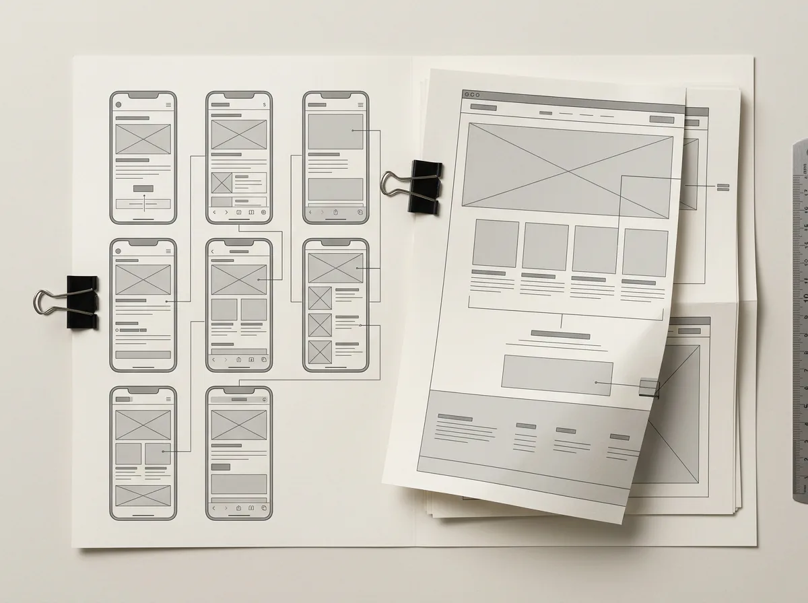

All projects
UX structure & interaction
Product Wireframes
Early-stage flows translated into clear, reviewable interface systems.

Project overview
A case-study template for documenting the problem, user flow, key decisions, and the evolution from rough structure to a resolved interface.
Deliverables
- User flows
- Low-fidelity wireframes
- Interaction notes
Project PDF
Upload a deck or case-study PDF to Assets, then add its URL to this project’s pdfUrl field.